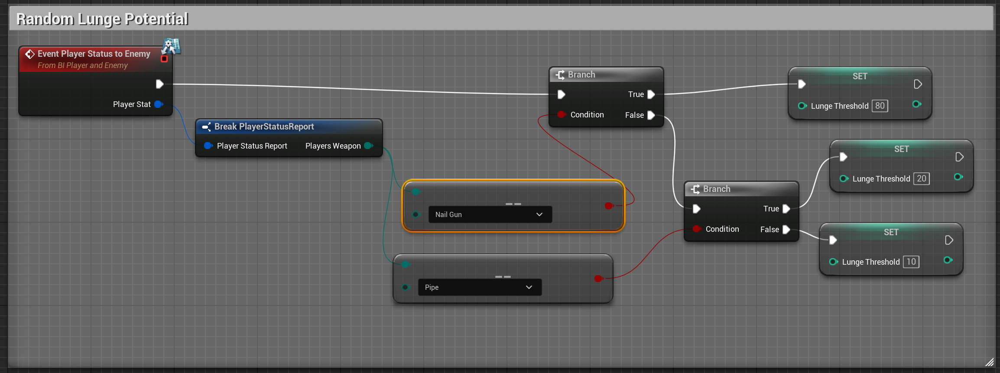

Our game AI was made to emulate a classic Resident Evil Zombie. It's slow, unintelligent, but aggressive and sometimes unpredictable. Because of how simple the behavior was set to be, a Finite State Machine suited the problem. Plus, we would have finer control over its more unpredictable aspects.

General layout of the enemy blueprint.
The Finite State Machine Overview
Each state is transitioned to according to boolean values representing the state of the enemy.
A benefit of this design was the innate modularity. If a designer wanted a behavior done, there was a clear path to do it, though often with added code complexity.
Randomness
One of the ways we wanted to make players feel uneasy was through randomizing attributes of the enemy so they couldn't get a clear read on what it was doing, or thinking. One of the challenges was understanding what things about the player's behavior would impact its own behavior.


Animations and Collision
One of the surprisingly neat things to experiment with was collisions on the enemy. At first the logic was using a simple delay to spawn a collision sphere at a certain point near the chest of the enemy, but this proved to have inconsistent results.
Then I learned you could send notifications through the animation system which could be used to set state values. Yay, more bloat, but this allowed for frame-perfect collisions.
- -Jordan Fowler - Level Designer
- -Aaron Hansen - Programmer, AI, Randomization
- -Michael Haynes - Producer, Programmer, Level Generation, Particles
- -Gabe Hoefler - Narrative Director
- -Caleb Kissinger - Programmer, AI, Animation Lead, Shaders/Materials
- -Dong Ta - Audio Lead
- -Haoran Wang - Tech Lead, Level Generation
- -Nathan Fallon - UI/UX Programmer and Designer
- -Liam Binford - Programmer, Level Generation, Fog